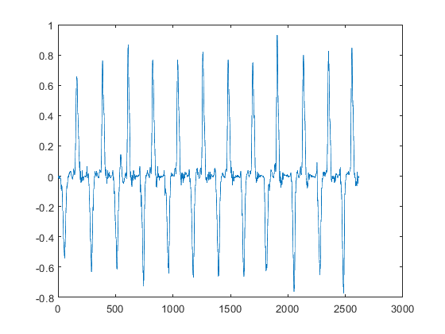

movement quality functional activity
TO DO selecteer de "rust fases" voor en na de gesegmenteerde herhalingen en verwijder deze. Plak daarna de signalen weer aan elkaar.
Contents
- 1. input data
- 2. load data
- 2.1 Load xsens data
- ||event detection |
- table stetup
- Lyapunov exponent matlab function
- LDLJ_A --> LOG DIMENSIONLESS JERK ON RAW ACCELERATION
- SPARC --> SPECTRAL ARC LENGTH ON RAW ANGULAR VELOCITY
- sample entropy Jill --> TO defines tollerance
- Autocorrelation
- movement speed based on the repetitions
- RMS
- save raw acc and avel data to struct
- save movement quality to table
- everything in one gigantic table.
I need to run this file using publish en use that as a help function. Which means I need to explain everyting in more detail. When the code is finished :)
clear all; clc; %close all;
1. input data
cd("C:\Users\u0117545\Documents\GitHub\ULIFT_BC") addpath("C:\Users\u0117545\OneDrive - KU Leuven\2.Dataprocessing\Matlab\addons")
Change the U-number and path to match where the data is located
Timepoint = 'T1'; movement = "F"; path.root = 'C:\Users\u0117545\KU Leuven\An De Groef - DATA'; path.out = fullfile(path.root,'Output','Database_MovQual.mat'); fs = 60; plot_or_not = 1; Affected_table = readtable(fullfile(path.root,"Aangedane zijde.xlsx"));
2. load data
for subj = [8]% 9 10 11 12 14 16 17 19 21] % 1:21%21 [8 9 10 11 12 14 16 17 19 21] == proefpersonen zonder "rust" data. if subj < 10 subj_name = ['BC_00' num2str(subj)]; elseif subj < 100 subj_name = ['BC_0' num2str(subj)]; else subj_name = ['BC_', num2str(subj)]; end affected = Affected_table(strcmp(Affected_table.ppID, subj_name), "involved"); disp(' ') disp(['Processing ' subj_name ': ' Timepoint '.....']) path.subj = fullfile(path.root, subj_name, 'Xsens', Timepoint, 'Reproces'); check_subj = exist(path.subj); if check_subj == 7 %initialize counters counterR = 0; counterR_SSS = 0; counterL = 0; counterL_SSS = 0; content = dir(path.subj); nfiles = size(content,1); % Start loop through ULIFT files per subject for file = 1:nfiles if contains(content(file).name, movement) && contains(content(file).name, '.mvnx') && ~contains(content(file).name, 'AF') && ~contains(content(file).name, 'ULIFT') file_ik = fullfile(path.subj, content(file).name); [~,name, ~] = fileparts(content(file).name); [fileName] = regexprep(name, '-', '_'); d = strfind(name,'_'); arm = content(file).name(d+1); if ~isempty(Affected_table{strcmp(Affected_table.ppID, subj_name), "involved"})
if strcmp(arm, 'L') sensorno = 10; segmentno = 14; jointno = 12; if strcmp(Affected_table{strcmp(Affected_table.ppID, subj_name), "involved"}, 'L') side = 'affected'; else side = 'unaffected'; end elseif strcmp(arm, 'R') sensorno = 6; segmentno = 10; jointno = 8; if strcmp(Affected_table{strcmp(Affected_table.ppID, subj_name), "involved"}, 'R') side = 'affected'; else side = 'unaffected'; end end disp([' ' 'Analysing: ' fileName '.....']) disp([' ' 'Arm of interst: ' arm '.....'])
Analysing: F_L_001..... Arm of interst: L.....
Analysing: F_R_001..... Arm of interst: R.....
2.1 Load xsens data
Change the filename here to the name of the file you would like to import
disp([' ' content(file).name ': read xsens file']) [sensorData, segmentData, jointData]= MVN(file_ik); % extract unflitered acceleration data x = sensorData(sensorno).sensorFreeAcceleration(:,1); y = sensorData(sensorno).sensorFreeAcceleration(:,2); z = sensorData(sensorno).sensorFreeAcceleration(:,3); res = vecnorm(sensorData(sensorno).sensorFreeAcceleration,2,2); acc = table(x, y, z, res); % table of unfiltered acceleration data clear x y z res % extract unfiltered angular velocity data x = segmentData(segmentno).angularVelocity(:,1); y = segmentData(segmentno).angularVelocity(:,2); z = segmentData(segmentno).angularVelocity(:,3); res = vecnorm(segmentData(segmentno).angularVelocity,2,2); avel = table(x, y, z, res); clear x y z res % extract unfiltered sement velocity data x = segmentData(segmentno).velocity(:,1); y = segmentData(segmentno).velocity(:,2); z = segmentData(segmentno).velocity(:,3); res = vecnorm(segmentData(segmentno).velocity, 2, 2); vel = table(x, y, z, res); clear x y z res
F_L-001.mvnx: read xsens file Warning: Error updating Text. String scalar or character vector must have valid interpreter syntax: Loading file C:\Users\u0117545\KU Leuven\An De Groef - DATA\BC_008\Xsens\T1\Reproces\F_L-001.mvnx
F_R-001.mvnx: read xsens file Warning: Error updating Text. String scalar or character vector must have valid interpreter syntax: Loading file C:\Users\u0117545\KU Leuven\An De Groef - DATA\BC_008\Xsens\T1\Reproces\F_R-001.mvnx
||event detection |
seperation of the different repetitions| TEXT
disp([' ' content(file).name ': define seperate repetitions']) %filtered velocity data for segmentation fc = 2; %cutoff freq fs = 60; %sample freq [b,a] = butter(4, fc/(fs/2)); velocity = filtfilt(b,a, segmentData(segmentno).velocity); velocityX = velocity(:,1); velocityY = velocity(:,2); velocityZ = velocity(:,3); velocityVec = vecnorm(velocity, 2,2); % SensorFree = filtfilt(b,a, sensorData(sensorno).sensorFreeAcceleration); % SensorFreeX = SensorFree(:,1); % SensorFreeY = SensorFree(:,2); % SensorFreeZ = SensorFree(:,3); % SensorFreeVec = vecnorm(SensorFree,2,2); % SensorFreeDiff = [diff(SensorFreeVec); 0]; % angularVel_LA = filtfilt(b,a, segmentData(segmentno).angularVelocity); % angularVelX = angularVel_LA(:,1); % angularVelY = angularVel_LA(:,2); % angularVelZ = angularVel_LA(:,3); % angularVelVec = vecnorm(angularVel_LA, 2, 2); % angularVelDiff = [diff(angularVelVec); 0]; % dataframes vel_filtered = table(velocityX, velocityY, velocityZ, velocityVec); % df.SenAcc = table(SensorFreeX, SensorFreeY, SensorFreeZ, SensorFreeVec, SensorFreeDiff); % df.Avel = table(angularVelX, angularVelY, angularVelZ, angularVelVec, angularVelDiff); clear velocity velocityX velocityY velocityZ velocityVec % clear sensorFree sensorFreeX sensorFreeY SensorFreeZ sensorFreeVec SensorFreeDiff % clear angularVel_X angularVelY angularVelZ angularVelVec angularVelDiff % validation process %==================== % temp = readtable("C:\Users\u0117545\Documents\GitHub\ULIFT_BC\ValidationStartEnd.xlsx","Sheet","Functional"); % temp = temp(strcmp(temp.subj_id, subj_name),:); % temp = temp(strcmp(temp.Timpoint, Timepoint),:); % interest = temp(strcmp(temp.Trial, fileName),:); %==================== [peakLocMax, peakMagMax] = peakfinder(vel_filtered.velocityVec, [],[],1, false); [peakLocMin, peakMagMin] = peakfinder(vel_filtered.velocityVec, [],[],-1, false); if strcmp(side, 'affected') % nexttile % plottitle = {['velocity data ' fileName]}; % title(plottitle) % plot(vel_filtered.velocityVec) % hold on % plot(peakLocMin, peakMagMin, 'ko') % plot(peakLocMax, peakMagMax, 'ko') % the first rep should start after a local maximum if peakLocMin(1) - peakLocMax(1) < 0 startpeak = 2; % plot(peakLocMin(startpeak:2:end), peakMagMin(startpeak:2:end), 'r*') % xline(peakLocMin(startpeak:2:end), 'r') reps = peakLocMin(startpeak:2:end); elseif peakLocMin(1) - peakLocMax(1) > 0 startpeak = 1; % plot(peakLocMin(startpeak:2:end), peakMagMin(startpeak:2:end), 'r*') % xline(peakLocMin(startpeak:2:end), 'r') reps = peakLocMin(startpeak:2:end); end end if peakLocMin(1) - peakLocMax(1) < 0 % plot(peakLocMin(2:2:end), peakMagMin(2:2:end), 'r*') % xline(peakLocMin(2:2:end), 'r') reps = peakLocMin(2:2:end); elseif peakLocMin(1) - peakLocMax(1) > 0 % plot(peakLocMin(1:2:end), peakMagMin(1:2:end), 'r*') % xline(peakLocMin(1:2:end), 'r') reps = peakLocMin(1:2:end); end % plot individual velocity vectors if plot_or_not if strcmp(side, 'affected') nexttile for idx = 1:length(reps)-1 plot(vel.z(reps(idx):reps(idx+1))) hold on; hline(0) end plottitle = {[subj_name, ' number of reps ', num2str(length(reps))]}; title(plottitle) end end %==================== % if ~isempty(interest) % interest = interest(:,~ismissing(interest)); % xline(interest{1,4:end}, 'LineWidth', 1.5, 'Color','#A2142F') % end %====================
F_L-001.mvnx: define seperate repetitions
F_R-001.mvnx: define seperate repetitions
table stetup
ppID = string(subj_name);
trial = string(fileName);
time = string(Timepoint);
% %% stability measures
% % Local Dynamic stability | Lyapunov exponent
% % based on Rossenstein's algorithm
% n_dim = 5;
% ws = 10;
%
% calculate the delay based on the paper of rosenstein:
% drop in the autocorrelation of 1-1/e
% acorr = xcov(acc.res, 'unbiased');
% [pks,locs] = findpeaks(acorr, 'MinPeakHeight', 0);
% nPeaks = numel(locs);
% TT = table(locs,pks);
% [~,I] = max(TT.pks(10:height(TT)-10));
% I = I + 9;
% zerophase_i = TT.locs(I);
%
% acorr_norm = acorr./acorr(zerophase_i);
%
% for j = 1:height(TT)
% TT.pks_norm(j) = acorr_norm(TT.locs(j));
% end
%
%
% drop_value = (1/exp(1));
% temp = acorr_norm(zerophase_i:TT.locs(I+2),1);
%
% delay = find(temp < 1 -drop_value, 1, 'first'); % the delay
%
% T = (TT.locs(I+1) - zerophase_i)/fs; % dominant period in the signal(in seconds/cycles)
%
% % calculate the maximum lyapunov exponent based on
% % personalised Time delay
% states_x = makestatelocal(acc.x, reps, n_dim, delay);
% states_y = makestatelocal(acc.y, reps, n_dim, delay);
% states_z = makestatelocal(acc.z, reps, n_dim, delay);
% states_res = makestatelocal(acc.res, reps, n_dim, delay);
%
% [divergence_x, lds_x] = lds_calc(states_x, ws, fs, T, plot_or_not);
% [divergence_y, lds_y] = lds_calc(states_y, ws, fs, T, plot_or_not);
% [divergence_z, lds_z] = lds_calc(states_z, ws, fs, T, plot_or_not);
% [divergence_res, lds_res] = lds_calc(states_res, ws, fs, T, plot_or_not);
%
% % calculate the maximum lyapunov exponent based on
% % standardised Time delay
% delay_st = 10;
% states_x_st = makestatelocal(acc.x, reps, n_dim, delay_st);
% states_y_st = makestatelocal(acc.y, reps, n_dim, delay_st);
% states_z_st = makestatelocal(acc.z, reps, n_dim, delay_st);
% states_res_st = makestatelocal(acc.res, reps, n_dim, delay_st);
%
% [divergence_x_st, lds_x_st] = lds_calc(states_x_st, ws, fs, T, plot_or_not);
% [divergence_y_st, lds_y_st] = lds_calc(states_y_st, ws, fs, T, plot_or_not);
% [divergence_z_st, lds_z_st] = lds_calc(states_z_st, ws, fs, T, plot_or_not);
% [divergence_res_st, lds_res_st] = lds_calc(states_res_st, ws, fs, T, plot_or_not);
% %% Lyapunov exponent matlab function
% % standard dominant frequency based on the autocorrelation i.e. full cycles
% % calcualte the dominent period of the signal
% acorr = xcov(acc.res, 'unbiased');
% [pks,locs] = findpeaks(acorr, 'MinPeakHeight', 0);
% nPeaks = numel(locs);
% TT = table(locs,pks);
% [~,I] = max(TT.pks(10:height(TT)-10));
% I = I + 9;
% zerophase_i = TT.locs(I);
%
% acorr_norm = acorr./acorr(zerophase_i);
%
% for j = 1:height(TT)
% TT.pks_norm(j) = acorr_norm(TT.locs(j));
% end
% T = (TT.locs(I+1) - zerophase_i)/fs; % dominant period in the signal(in seconds/cycles)
% L1 = round(0.5*T*fs); %to calculate the Lyapunov Exponent over half a cycle
% eRange=[0, L1];
%
% [~,eLag,eDim] = phaseSpaceReconstruction(acc.x(reps(1):reps(end)));
% lyapExp_x = lyapunovExponent(acc.x(reps(1):reps(end)),fs, eLag, eDim, 'MinSeparation', ceil(T), 'ExpansionRange',eRange);
%
% [~,eLag,eDim] = phaseSpaceReconstruction(acc.y(reps(1):reps(end)));
% lyapExp_y = lyapunovExponent(acc.y(reps(1):reps(end)),fs, eLag, eDim, 'MinSeparation', ceil(T), 'ExpansionRange',eRange);
%
% [~,eLag,eDim] = phaseSpaceReconstruction(acc.z(reps(1):reps(end)));
% lyapExp_z = lyapunovExponent(acc.z(reps(1):reps(end)),fs, eLag, eDim, 'MinSeparation', ceil(T), 'ExpansionRange',eRange);
%
%
% %% Lyapunov exponent matlab function
% % dominant period based on a single frequency analysis
% % of acceleration in z direction
% temp = acc.z(reps(1):reps(end));
%
% Y = fft(temp);
% N = length(temp);
%
% k = [0:N-1];
% dt = 1/fs;
% Power = abs(fft(temp))/(N); %% absolute value of the fft
% f = k*(1/(N*dt));
% figure;plot(f(1:(N/2)), Power(1:(N/2)));
%
% tf = islocalmax(Power(1:(N/2)), 'MaxNumExtrema',1);
% T2 = f(tf);
%
% L1 = round(0.5*T2*fs); %to calculate the Lyapunov Exponent over half a cycle
% eRange=[0, L1];
%
% [~,eLag,eDim] = phaseSpaceReconstruction(acc.x(reps(1):reps(end)));
% lyapExp_x2 = lyapunovExponent(acc.x(reps(1):reps(end)),fs, eLag, eDim, 'MinSeparation', ceil(T2), 'ExpansionRange',eRange);
%
% [~,eLag,eDim] = phaseSpaceReconstruction(acc.y(reps(1):reps(end)));
% lyapExp_y2 = lyapunovExponent(acc.y(reps(1):reps(end)),fs, eLag, eDim, 'MinSeparation', ceil(T2), 'ExpansionRange',eRange);
%
% [~,eLag,eDim] = phaseSpaceReconstruction(acc.z(reps(1):reps(end)));
% lyapExp_z2 = lyapunovExponent(acc.z(reps(1):reps(end)),fs, eLag, eDim, 'MinSeparation', ceil(T2), 'ExpansionRange',eRange);
% %% Lyapunov exponent matlab function
% % dominant period based on the frequency analysis
% % of each acceleration axis seperatly
%
% % x axis
% %-------
% temp = acc.x(reps(1):reps(end));
%
% Y = fft(temp);
% N = length(temp);
%
% k = [0:N-1];
% dt = 1/fs;
% Power = abs(Y)/N;%% absolute value of the fft
% f = k*(1/(N*dt));
%
% tf = islocalmax(Power(1:(N/2)), 'MaxNumExtrema',1);
% T2 = f(tf);
%
% L1 = round(0.5*T2*fs); %to calculate the Lyapunov Exponent over half a cycle
% eRange=[0, L1];
%
% [~,eLag,eDim] = phaseSpaceReconstruction(acc.x(reps(1):reps(end)));
% lyapExp_x = lyapunovExponent(acc.x(reps(1):reps(end)),fs, eLag, eDim, 'MinSeparation', ceil(T2), 'ExpansionRange',eRange);
%
% % y-axis
% %-------
% temp = acc.y(reps(1):reps(end));
%
% Y = fft(temp);
% N = length(temp);
%
% k = [0:N-1];
% dt = 1/fs;
% Power = abs(fft(temp))/(N); %% absolute value of the fft
% f = k*(1/(N*dt));
%
% tf = islocalmax(Power(1:(N/2)), 'MaxNumExtrema',1);
% T2 = f(tf);
%
% L1 = round(0.5*T2*fs); %to calculate the Lyapunov Exponent over half a cycle
% eRange=[0, L1];
%
% [~,eLag,eDim] = phaseSpaceReconstruction(acc.y(reps(1):reps(end)));
% lyapExp_y = lyapunovExponent(acc.y(reps(1):reps(end)),fs, eLag, eDim, 'MinSeparation', ceil(T2), 'ExpansionRange',eRange);
%
% % z-axis
% %-------
% temp = acc.z(reps(1):reps(end));
%
% Y = fft(temp);
% N = length(temp);
%
% k = [0:N-1];
% dt = 1/fs;
% Power = abs(fft(temp))/(N); %% absolute value of the fft
% f = k*(1/(N*dt));
%
% tf = islocalmax(Power(1:(N/2)), 'MaxNumExtrema',1);
% T2 = f(tf);
%
% L1 = round(0.5*T2*fs); %to calculate the Lyapunov Exponent over half a cycle
% eRange=[0, L1];
%
% [~,eLag,eDim] = phaseSpaceReconstruction(acc.z(reps(1):reps(end)));
% lyapExp_z = lyapunovExponent(acc.z(reps(1):reps(end)),fs, eLag, eDim, 'MinSeparation', ceil(T2), 'ExpansionRange',eRange);
%
% % resultant
% %----------
% temp = acc.res(reps(1):reps(end));
%
% Y = fft(temp);
% N = length(temp);
%
% k = [0:N-1];
% dt = 1/fs;
% Power = abs(fft(temp))/(N); %% absolute value of the fft
% f = k*(1/(N*dt));
%
% tf = islocalmax(Power(1:(N/2)), 'MaxNumExtrema',1);
% T2 = f(tf);
%
% L1 = round(0.5*T2*fs); %to calculate the Lyapunov Exponent over half a cycle
% eRange=[0, L1];
%
% [~,eLag,eDim] = phaseSpaceReconstruction(acc.z(reps(1):reps(end)));
% lyapExp_res = lyapunovExponent(acc.res(reps(1):reps(end)),fs, eLag, eDim, 'MinSeparation', ceil(T2), 'ExpansionRange',eRange);
Lyapunov exponent matlab function
dominant period based on the frequency analysis of each acceleration axis seperatly.
[lyapExp_x ,eLag(1), eDim(1)] = DivergenceExponent(acc.x(reps(1):reps(end)), fs);
[lyapExp_y, eLag(2), eDim(2)] = DivergenceExponent(acc.y(reps(1):reps(end)), fs);
[lyapExp_z, eLag(3), eDim(3)] = DivergenceExponent(acc.z(reps(1):reps(end)), fs);
[lyapExp_res, eLag(4), eDim(4)] = DivergenceExponent(acc.res(reps(1):reps(end)), fs);
Warning: Integer operands are required for colon operator when used as index. Warning: Integer operands are required for colon operator when used as index. Warning: Integer operands are required for colon operator when used as index. Warning: Integer operands are required for colon operator when used as index.
LDLJ_A --> LOG DIMENSIONLESS JERK ON RAW ACCELERATION
for idx = 1:size(reps,1)-1 t = [reps(idx),reps(idx+1)]; ldlj_a(:, idx) = log_dimensionless_jerk_IMU(acc{:,1:3},t, fs); end
SPARC --> SPECTRAL ARC LENGTH ON RAW ANGULAR VELOCITY
params = [0.05, 20, 4];
for idx = 1:size(reps)-1
sparc_x(:,idx) = SpectralArcLength(avel.x(reps(idx):reps(idx+1)), fs, params);
sparc_y(:,idx) = SpectralArcLength(avel.y(reps(idx):reps(idx+1)), fs, params);
sparc_z(:,idx) = SpectralArcLength(avel.z(reps(idx):reps(idx+1)), fs, params);
sparc_res(:,idx) = SpectralArcLength(avel.res(reps(idx):reps(idx+1)), fs, params);
end
% %% sample entropy --> tolerance based on 0.2 * std(signal)
% %---------------------------------------------------------
% r = 0.2;
% m = 2;
% SampleEntropy_x = sampen(acc.x(reps(1):reps(end)), m, r);
% SampleEntropy_y = sampen(acc.y(reps(1):reps(end)), m, r);
% SampleEntropy_z = sampen(acc.z(reps(1):reps(end)), m, r);
% SampleEntropy_res = sampen(acc.res(reps(1):reps(end)), m, r);
%
% %% sample entropy Jill --> fixed tolerance
% %-----------------------------------------
% r = 0.2;
% m = 2;
% sampen_x = sampen_Jill(acc.x(reps(1):reps(end)), m, r);
% sampen_y = sampen_Jill(acc.y(reps(1):reps(end)), m, r);
% sampen_z = sampen_Jill(acc.z(reps(1):reps(end)), m, r);
% sampen_res = sampen_Jill(acc.res(reps(1):reps(end)), m, r);
sample entropy Jill --> TO defines tollerance
%----------------------------------------------- if strcmp(Timepoint, 'T0') % calculate personalised tollerance based on pre-op % "healthy" data if exist('C:\Users\u0117545\Documents\GitHub\ULIFT_BC\output\tollarance_table.mat', 'file') == 2 load('C:\Users\u0117545\Documents\GitHub\ULIFT_BC\output\tollarance_table.mat') end sigma = std(acc{reps(1):reps(end), :}, [], 1); r = 0.2 * sigma; m=2; tollarance_table.(arm)(subj, :) = table(ppID, r); else m = 2; load C:\Users\u0117545\Documents\GitHub\ULIFT_BC\output\tollarance_table.mat r = tollarance_table.(arm).r(strcmp(tollarance_table.(arm).ppID, subj_name),:); end sampen_x = sampen_Jill(acc.x(reps(1):reps(end), :), m, r(1)); sampen_y = sampen_Jill(acc.y(reps(1):reps(end), :), m, r(2)); sampen_z = sampen_Jill(acc.z(reps(1):reps(end), :), m, r(3)); sampen_res = sampen_Jill(acc.res(reps(1):reps(end), :), m, r(4));
Autocorrelation
%-----------------
[acorr_x, reg_x] = Symmetry(vel.x(reps(1):reps(end)));
[acorr_y, reg_y] = Symmetry(vel.y(reps(1):reps(end)));
[acorr_z, reg_z] = Symmetry(vel.z(reps(1):reps(end)));
[acorr_res, reg_res] = Symmetry(vel.res(reps(1):reps(end)));
movement speed based on the repetitions
for idx = 1:size(reps,1) - 1 movement_time(idx,1) = 1/fs * (reps(idx+1)-reps(idx)); end
RMS
rms_x = rms(acc.x(reps(1):reps(end)));
rms_y = rms(acc.y(reps(1):reps(end)));
rms_z = rms(acc.z(reps(1):reps(end)));
rms_res = rms(acc.res(reps(1):reps(end)));
rms_T = sqrt(rms_x.^2 + rms_y.^2 + rms_z.^2);
rmsr_x = rms_x/rms_T;
rmsr_y = rms_y/rms_T;
rmsr_z = rms_z/rms_T;
save raw acc and avel data to struct
if strcmp(side, 'affected') MoveQual.raw.affected.(ppID).(Timepoint).(trial).acc = acc(reps(1):reps(end), :); MoveQual.raw.affected.(ppID).(Timepoint).(trial).avel = avel; elseif strcmp(side, 'unaffected') MoveQual.raw.unaffected.(ppID).(Timepoint).(trial).acc = acc; MoveQual.raw.unaffected.(ppID).(Timepoint).(trial).avel = acc; end
save movement quality to table
if strcmp(side, 'affected') aff.key(subj,:) = table(ppID, trial,time); % %stability || lyapunov exponent || personalised time % %delay % aff.LyEs_aff(subj, :) = table(ppID, lds_x(1), lds_y(1), lds_z(1), lds_res(1)); % aff.LyEl_aff(subj, :) = table(ppID, lds_x(2), lds_y(2), lds_z(2), lds_res(2)); % aff.LyEs_aff.Properties.VariableNames = {'ppID', 'LyEs_x', 'LyEs_y', 'LyEs_z', 'LyEs_res'}; % aff.LyEl_aff.Properties.VariableNames = {'ppID', 'LyEl_x', 'LyEl_y', 'LyEl_z', 'LyEl_res'}; % % %stability || lyapunov exponent || standardised time % %delay % aff.LyEs_st_aff(subj, :) = table(ppID, lds_x_st(1), lds_y_st(1), lds_z_st(1), lds_res_st(1)); % aff.LyEl_st_aff(subj, :) = table(ppID, lds_x_st(2), lds_y_st(2), lds_z_st(2), lds_res_st(2)); % aff.LyEs_st_aff.Properties.VariableNames = {'ppID', 'LyEs_x_st', 'LyEs_y_st', 'LyEs_z_st', 'LyEs_res_st'}; % aff.LyEl_st_aff.Properties.VariableNames = {'ppID', 'LyEl_x_st', 'LyEl_y_st', 'LyEl_z_st', 'LyEl_res_st'}; %stability || lyapunov exponent || using builed in %matlab function aff.lyapExp(subj,:) = table(ppID, lyapExp_x, lyapExp_y, lyapExp_z, lyapExp_res); %predictability || Sample Entropy %aff.SampEn_aff(subj, :) = table(ppID, SampleEntropy_x, SampleEntropy_y, SampleEntropy_z, SampleEntropy_res); aff.Entropy_aff(subj,:) = table(ppID, sampen_x, sampen_y, sampen_z, sampen_res); %aff.Entropy_var(subj,:) = table(ppID, sampen_x_var,sampen_y_var, sampen_z_var, sampen_res_var); %movement time || average aff.avg_move_time_aff(subj,:) = table(ppID, mean(movement_time)); aff.avg_move_time_aff.Properties.VariableNames = {'ppID', 'avg_movement_time'}; %movement time || variability aff.var_move_time_aff(subj,:) = table(ppID, std(movement_time)); aff.var_move_time_aff.Properties.VariableNames = {'ppID', 'var_movement_time'}; %regularity || autocorrelation aff.regularity(subj,:) = table(ppID, reg_x, reg_y, reg_z, reg_res); %variability || root mean square aff.RMS_x(subj,:) = table(ppID, rms_x, rms_y, rms_z, rms_res); %variability || root mean square ratio aff.RMSR_x(subj,:) = table(ppID, rmsr_x, rmsr_y, rmsr_z); %smoothness || SPARC aff.SPARC_aff(subj,:) = table(ppID, mean(sparc_x), mean(sparc_y), mean(sparc_z), mean(sparc_res)); aff.SPARC_aff.Properties.VariableNames = {'ppID', 'sparc_x', 'sparc_y', 'sparc_z', 'sparc_res'}; %smoothness || LDLJ aff.LDLJ_A_aff (subj, :) = table(ppID, mean(ldlj_a)); aff.LDLJ_A_aff.Properties.VariableNames = {'ppID', 'LDLJ_A'}; elseif strcmp(side, 'unaffected') unaff.key(subj,:) = table(ppID, trial, time); % %stability || Lyapunov Exponent || personilised time % %delay % unaff.LyEs_unaff(subj, :) = table(ppID, lds_x(1), lds_y(1), lds_z(1), lds_res(1)); % unaff.LyEl_unaff(subj, :) = table(ppID, lds_x(2), lds_y(2), lds_z(2), lds_res(2)); % unaff.LyEs_unaff.Properties.VariableNames = {'ppID', 'LyEs_x', 'LyEs_y', 'LyEs_z', 'LyEs_res'}; % unaff.LyEl_unaff.Properties.VariableNames = {'ppID', 'LyEl_x', 'LyEl_y', 'LyEl_z', 'LyEl_res'}; % % %stability || lyapunov exponent || standardised time % %delay % unaff.LyEs_st_aff(subj, :) = table(ppID, lds_x_st(1), lds_y_st(1), lds_z_st(1), lds_res_st(1)); % unaff.LyEl_st_aff(subj, :) = table(ppID, lds_x_st(2), lds_y_st(2), lds_z_st(2), lds_res_st(2)); % unaff.LyEs_st_aff.Properties.VariableNames = {'ppID', 'LyEs_x_st', 'LyEs_y_st', 'LyEs_z_st', 'LyEs_res_st'}; % unaff.LyEl_st_aff.Properties.VariableNames = {'ppID', 'LyEl_x_st', 'LyEl_y_st', 'LyEl_z_st', 'LyEl_res_st'}; %stability || lyapunov exponent || using builed in %matlab function unaff.lyapExp(subj,:) = table(ppID, lyapExp_x, lyapExp_y, lyapExp_z, lyapExp_res); %predictability || sample entropy %unaff.SampEn_unaff(subj, :) = table(ppID, SampleEntropy_x, SampleEntropy_y, SampleEntropy_z, SampleEntropy_res); unaff.Entropy_unaff(subj,:) = table(ppID, sampen_x, sampen_y, sampen_z, sampen_res); %unaff.Entropy_var(subj,:) = table(ppID, sampen_x_var,sampen_y_var, sampen_z_var, sampen_res_var); %movement time || average unaff.avg_move_time_unaff(subj,:) = table(ppID, mean(movement_time)); unaff.avg_move_time_unaff.Properties.VariableNames = {'ppID', 'avg_movement_time'}; %movement time || varibility unaff.var_move_time_unaff(subj,:) = table(ppID, std(movement_time)); unaff.var_move_time_unaff.Properties.VariableNames = {'ppID', 'var_movement_time'}; %regularity || autocorrelation unaff.regularity_x(subj,:) = table(ppID, reg_x, reg_y, reg_z, reg_res); %variability || root mean square unaff.RMS_x(subj,:) = table(ppID, rms_x, rms_y, rms_z, rms_res); %variability || root mean square ratio unaff.RMSR_x(subj,:) = table(ppID, rmsr_x, rmsr_y, rmsr_z); %smoothness || SPARC unaff.SPARC_unaff(subj,:) = table(ppID, mean(sparc_x), mean(sparc_y), mean(sparc_z), mean(sparc_res)); unaff.SPARC_unaff.Properties.VariableNames = {'ppID', 'sparc_x', 'sparc_y', 'sparc_z', 'sparc_res'}; %smoothness ||LDLJ unaff.LDLJ_A_unaff(subj, :) = table(ppID, mean(ldlj_a)); unaff.LDLJ_A_unaff.Properties.VariableNames = {'ppID', 'LDLJ_A'}; end
end% if information about the affected side is availible end% file name contains movement and .mvnx end% loop though the number of files end% check if data folder exists end% loop through number of subjects return
Processing BC_008: T1.....
everything in one gigantic table.
every timepoint has an individual tab unaffected
fields = fieldnames(unaff); MovementQual.unaff = rmmissing(unaff.key); for fld = 2:size(fields, 1) MovementQual.unaff = join(MovementQual.unaff, unaff.(fields{fld})); end clear fields fld %affected fields = fieldnames(aff); MovementQual.aff = rmmissing(aff.key); for fld = 1:size(fields,1) MovementQual.aff = join(MovementQual.aff, aff.(fields{fld})); end clear fields fld return writetable(MovementQual.unaff,'C:\Users\u0117545\Documents\GitHub\ULIFT_BC\Output\MoveQual_unaff.xlsx', 'FileType', 'spreadsheet', ... "WriteMode", "append", "Sheet", Timepoint) writetable(MovementQual.aff, 'C:\Users\u0117545\Documents\GitHub\ULIFT_BC\Output\MoveQual_aff.xlsx', 'FileType', 'spreadsheet', ... 'WriteMode', 'append', 'sheet', Timepoint) save('C:\Users\u0117545\Documents\GitHub\ULIFT_BC\Output\tollarance_table.mat','tollarance_table')